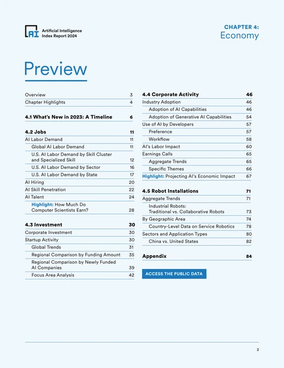
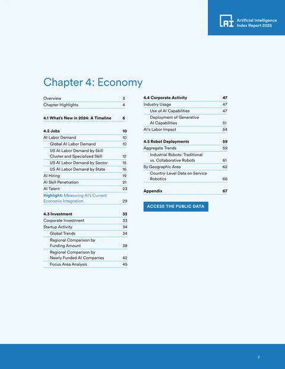

Stanford AI Index 2025
I wrote the text and analysis of the Economy chapter of Stanford’s AI Index 2025: AI investment, jobs, company use and robots. I earned my place on the team through a three-month trial of weekly research reports, then brought a memo to the team every week or two until the chapter was done.
- Published
- 7 April 2025
- Data
- Five sources, from investment to robots
- Cited by
- The Federal Reserve and the White HouseFederal Reserve Board, 2025; Council of Economic Advisers, 2026.


A year at Stanford
In July 2024 I joined the MSx at Stanford Graduate School of Business, a one-year Master of Science in Management for experienced leaders.
In 2023 I saw that the way leaders manage was about to change. I did not expect to learn enough by staying in my role at Amazon. I spent the year at Stanford rebuilding how I work around AI: writing software, and working through accounting, finance, marketing and people management from first principles, with AI tools.
My class had 76 participants, 48 of them international. I consulted for Stanford Seed, which works with business owners in Africa, South Asia and Indonesia. I graduated in June 2025.
Measuring what AI was doing to the economy
In 2024, I joined Stanford’s AI Index as a graduate researcher, and my assignment was the economy.
The AI Index is Stanford’s annual report on the state of AI, written for policymakers, researchers, executives, journalists and the public by its Institute for Human-Centered Artificial Intelligence (HAI). As soon as I arrived, I looked for a way to do research with HAI. I was routed to the AI Index team and earned my place through a three-month trial, writing a research report nearly every week on a different topic.
Five data sources, one for each layer
The chapter measured AI in the economy with five data sources, one for each layer, and each number rests on a printed definition.
Quid tracked investment; Lightcast, job postings; LinkedIn, hiring; McKinsey’s surveys, company use; and the International Federation of Robotics (IFR), robot installations. A posting counted as an AI job if it named a skill on Lightcast’s list of AI skills. IFR data run a year behind, so the chapter reports robot installations for 2023.

Five layers, one year at a time
Each layer has its own source and its own units, from investment in AI to robot installations.
The data as a table
| Measure, source and unit | 2018 | 2019 | 2020 | 2021 | 2022 | 2023 | 2024 |
|---|---|---|---|---|---|---|---|
| Investment, Quid private AI investment, world, billions of US dollars | 43.10 | 58.18 | 73.79 | 145.40 | 113.01 | 104.34 | 150.79 |
| Job postings, Lightcast % of US job postings | 1.38% | 1.52% | 1.37% | 1.49% | 1.69% | 1.39% | 1.79% |
| Hiring, LinkedIn US AI hiring rate, yearly change (December) | 18.62% | 18.32% | 15.58% | 5.50% | 4.33% | −0.73% | 24.73% |
| Company use, McKinsey % of respondents who say their organization uses AI | 47% | 58% | 50% | 56% | 50% | 55% | 78% |
| Robots installed, IFR robots installed, world, thousands | 423 | 387 | 390 | 526 | 553 | 541 | No data |
One memo every two weeks
Until April 2025, I brought a memo of 4 to 6 pages to the team’s weekly meeting every two weeks, sometimes every week.
I read new research on AI and the economy for 90 minutes a day, alongside my classes. About a fifth of what I wrote reached the chapter. Six sections of the 2024 chapter did not return.


What changed between editions
Anthropic published its study of how people used its Claude assistant on 10 February 2025. Eight weeks later, it was a four-page highlight in the chapter. The 2024 chapter had used six data sources, with Stack Overflow among them.
Findings, charts and public data
The chapter’s opening page names its author: “Text and analysis by Njenga Kariuki.”
Ten findings open the chapter, each with a claim, a number and a comparison. In 2024, US private AI investment reached $109.1 billion, nearly 12 times China’s $9.3 billion. The share of survey respondents whose organizations used AI rose to 78%, from 55% in 2023. Each chart carries a source line, and the chart data are published as public files.

Launch week
The report was published on 7 April 2025, and HAI’s press release used the chapter’s figures for investment and adoption.
Two of HAI’s 10 launch charts came from the chapter. One of the report’s top takeaways was built on the chapter’s figures: “Business is all in on AI, fueling record investment and usage.” Two days later, a meeting at the Council on Foreign Relations, a US foreign-policy institute, opened with the same figures.
Cited by the Federal Reserve and White House
In October 2025, a Federal Reserve Board research note reproduced the chapter’s data on private AI investment.
The note stated that US private AI investment from 2013 to 2024 exceeded $470 billion; the chapter’s figure was $470.9 billion. In January 2026, a White House Council of Economic Advisers report cited the chapter’s figures on investment and adoption, and reproduced its 2024 country ranking. In April 2025, news outlets in China, India, Japan, Indonesia, Nigeria and Spain reported the chapter’s figures.

The next edition kept the five sources
The 2026 edition, published on 13 April 2026, kept the chapter’s five data sources and continued its series.
It added new measures, among them the revenue and computing spend of AI companies.